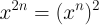
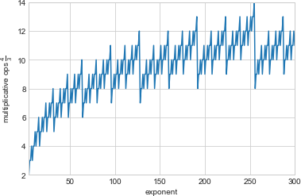

1 Introduction
The best problems are not what you think they are. Take, for example, this nugget from Project Euler:
A particular school offers cash rewards to children with good attendance and punctuality. If they are absent for three consecutive days or late on more than one occasion then they forfeit their prize.
During an n-day period a trinary string is formed for each child consisting of L’s (late), O’s (on time), and A’s (absent).
[…]
How many “prize” strings exist over a 30-day period?
When I first encountered it, I immediately started on an approach involving combinatorial counting; and then spent a good bit of the afternoon fighting gross over- and under-counting (due to the rule of absences). It wasn’t until sometime after dinner that I devised a viable strategy to attack #191.
This post covers a fair bit of ground, so, before diving in:
- We’ll construct a formal model of the problem, and then use it to actually arrive at a solution.
- For fun, we’ll try an alternative approach to see whether we can solve the problem faster.
- That will lead us into an investigation of the true computational complexity of the solution methods, with a look at a corner of Numpy’s internals.
- Finally, we’ll apply what we’ve learned to describe our solution’s execution time for various lengths of the attendance contest.
2 Modeling the Problem
The set of losing strings can be easily described by a fairly simple regular expression:
/\^./AAA./$|^.*L.*L.*$/
Using this regular expression, we can craft a state machine that recognizes the language of loss:
Of the options for representing the transition function for this state machine, the most convenient for our purposes is a square matrix D where each element di,j gives the number of inputs that will cause a transition from state i to state j:
Once the contest begins, we could find ourselves at any of a number of states on any given day, depending on the input sequence. To represent this, we’ll use a 7-element vector, st, where each element contains the number of input sequences that will land us in the corresponding state on day t. We begin at state 0:
3 Winning the Game
Multiplying s0 by the transition matrix D will yield a new vector, s1, interpreted as described above. In general,
Since state 6 gives the number of possible losses by day t, the number of wins is
where st,6 denotes the path count to state 6 (the failure state) at time t.
Implementing this in Python:
import numpy as np from numpy.linalg import matrix_power D = np.array( [ [1, 1, 0, 1, 0, 0, 0], [1, 0, 1, 1, 0, 0, 0], [1, 0, 0, 1, 0, 0, 1], [0, 0, 0, 1, 1, 0, 1], [0, 0, 0, 1, 0, 1, 1], [0, 0, 0, 1, 0, 0, 2], [0, 0, 0, 0, 0, 0, 3] ], dtype=np.uint64) s_0 = np.array([1, 0, 0, 0, 0, 0, 0]) def wins(days): s_t = s_0 @ matrix_power(D, 30) return 3**t - s_t[6]
We can simplify things a bit with a few observations:
- Row 0 of Dt equals st.
- Summing over st yields 3 × t, without having to do a single multiplication.
- There’s no way out of state 6, the failure state, which means that it can’t influence the path counts for the other states.
With these facts, we can shave off some work. First, let’s write D without a failure state:
D = np.array([[1, 1, 0, 1, 0, 0],
[1, 0, 1, 1, 0, 0],
[1, 0, 0, 1, 0, 0],
[0, 0, 0, 1, 1, 0],
[0, 0, 0, 1, 0, 1],
[0, 0, 0, 1, 0, 0]],
dtype=np.uint64)
Then, we can forget about using a state vector and find the number of wins directly:
def wins(days): return sum(matrix_power(D, days)[0])
4 Optimization
The implementation of wins above is based on interpreting D as an
adjacency matrix rather than as a transition function. Suppose you have
a binary adjacency matrix A and raise it to a power n:
Every cell of B, bi,j, then gives the number of paths of length n from node i to node j. That fact motivated the very clean approach that we just saw. However, multiplication is not so cheap as addition, and matrix multiplication is far from free. Can we do better than raising a 6×6 matrix to the 30th power?
Let’s go back to the interpretation of D as a state machine transition function. We’ll still use st to represent the number of input sequences placing us in the various states at time t, but now we’ll proceed one step:

From this, it’s straightforward to write a simple function based on the idea of state transition.
def wins_new(n): s0 = 1 s1 = s2 = s3 = s4 = s5 = s6 = 0 for t in range(n): s_0 = s0 + s1 + s2 s_1 = s0 s_2 = s1 s_3 = s0 + s1 + s2 + s3 + s4 + s5 s_4 = s3 s_5 = s4 s_6 = s2 + s3 + s4 + 2*s5 + 3*s6 s0, s1, s2, s3, s4, s5, s6 = s_0, s_1, s_2, s_3, s_4, s_5, s_6 return s0 + s1 + s2 + s3 + s4 + s5
We can trim here and reorder there to obtain:
def wins_new(n): s0 = 1 s1 = s2 = s3 = s4 = s5 = 0 s_0 = s_3 = 0 for t in range(n): s_0 = s0 + s1 + s2 s2 = s1 s1 = s0 s_3 = s_0 + s3 + s4 + s5 s5 = s4 s4 = s3 s0 = s_0 s3 = s_3 return s0 + s1 + s2 + s3 + s4 + s5
Now, let’s test to see if our new method is faster.
So far, so good—the new version is faster for contests of a sane length
(never mind the wisdom of an attendance contest that incentivizes
absence over tardiness). Notice, though, how wins_new’s run time
varies with the contest length; in particular, notice how it rises more
steadily than the old version’s. What happens if we continue the contest
for, say, 300 days?
As the contest drags on (with hardly anyone getting an education), the matrix version shows itself clearly as the faster approach. Why?
While a single iteration of wins_new’s loop is faster than a single
matrix multiplication (1.15 μs vs. 1.89 μs, respectively, on this
machine), that isn’t what really matters. What does matter is the number
of times a candidate algorithm performs its dominating operation. In the
case of the old version, that’s a matrix multiplication; in the case of
the new version, it’s the entire state update. And it matters how the
number of operations changes with respect to the job size (i.e., the
number of days of the contest).
In the case of wins_new, it’s easy to see from the code that it’s
O(n) for the number of days, and its runtime curve above is
empirical confirmation. But what about the complexity of the matrix
version?
Note that the grunt work of taking our transition matrix D to the
appropriate power is actually handled by numpy.linalg.matrix_power;
from its documentation:
For positive integers `n`, the power is computed by repeated matrix squarings and matrix multiplications.
What’s described here is an approach called binary exponentiation, which is based on the observations that

and
These facts motivate a strategy of converting the exponent to its binary
representation; and, for each bit b, squaring an accumulator before
multiplying by xb. The core of matrix_power (excerpted from
here)
is:
beta = binary_repr(n) Z, q, t = M, 0, len(beta) while beta[t-q-1] == '0': Z = N.dot(Z, Z) q += 1 result = Z for k in range(q+1, t): Z = N.dot(Z, Z) if beta[t-k-1] == '1': result = N.dot(result, Z)
The number of multiplications performed thus varies logarithmically,
rather than linearly, with the exponent n. This is the source of our
wins’s performance edge over wins_new for ridiculously long
contests.
5 Why the Sawtooth?
A quick glance at the runtime curve for wins tells us that its
complexity isn’t strictly logarithmic but, rather, a little more
complex. By all appearances, there’s a fairly regular sawtooth signal
riding atop the expected logarithmic curve. How does that arise?
The definition of binary exponentiation involves, in addition to repeated squarings, multiplications with the original matrix subject to the binary representation of the exponent; i.e., a 1 in the exponent’s bit string indicates multiplication by the original matrix on the corresponding iteration, while a 0 does not. From the Wikipedia article:
More precisely, the number of multiplications is one less than the number of ones present in the binary expansion of n.
Putting that together with the logarithmic growth in squarings, we can depict the total number of multiplicative operations needed to raise a number to a particular power:

This looks familiar, but how well does it explain the timing curve we saw? Plotting measured execution times against the number of multiplications:
And the equation for the depicted regression line is:
Putting this together with our knowledge of how to find the total number
of multiplcations required for exponentiation, we can, in principle,
estimate wins’s runtime for a given contest length.
6 Wrapping Up
Now we have two methods for solving the same problem, with different performance characteristics, and we have the building blocks for predicting which will be faster for a given input. Given all of that, we could craft a function to decide which method to employ and, if the overhead of making the decision is slight, we’d have excellent execution speed for any length of the contest. For a toy problem, that level of effort is hardly justified; for more serious applications, however, it’s well worth considering how to characterize and systematically balance the trade-offs between different approaches.
There’s one other thing to observe: We started with a nifty little math problem, and we found ourselves on a trail of thought leading from regular expressions and finite state machines into the code for a fundamental routine in a widely used numerical computing library. As programmers, we create solutions out of ideas. Those ideas have rich and complicated relationships with each other, and they have histories stretching back sometimes thousands of years. The most challenging and rewarding part of programming is not typing code but devising the solution that it represents. Programming languages, libraries, data formats, and others’ programs are but material, like metal or wood. Certainly, material is important, but it’s not everything; for all they have in common, there’s a world of ideas between a bicycle and an airplane.